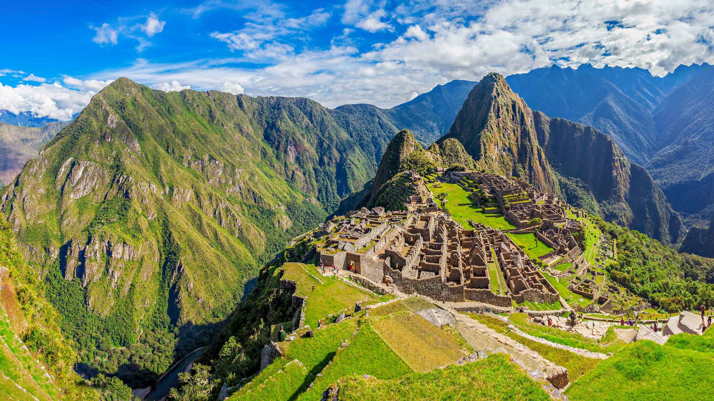

Machu Picchu (em quíchua Machu Picchu, "velha montanha"),[1] também chamada "cidade perdida dos Incas",[2] é uma cidade pré-colombiana bem conservada, localizada no topo de uma montanha, a 2 400 metros de altitude, no vale do rio Urubamba, atual Peru.
Foi construída no início do século XV, por volta de 1420[3], sob as ordens de Pachacuti. O local é, provavelmente, o símbolo mais típico do Império Inca, quer devido à sua original localização e características geológicas, quer devido à sua descoberta tardia em 1911. Apenas cerca de 30% da cidade é de construção original, o restante foi reconstruído. As áreas reconstruídas são facilmente reconhecidas, pelo encaixe entre as pedras. A construção original é formada por pedras maiores, e com encaixes com pouco espaço entre as rochas.
Consta de duas grandes áreas: a agrícola formada principalmente por terraços e recintos de armazenagem de alimentos; e a urbana, na qual se destaca a zona sagrada com templos, praças e mausoléus reais. A disposição dos prédios, a excelência do trabalho e o grande número de terraços para agricultura são impressionantes, destacando a grande capacidade daquela sociedade. No meio das montanhas, os templos, casas e cemitérios estão distribuídos de maneira organizada, abrindo ruas e aproveitando o espaço com escadarias. Segundo a história inca, tudo planejado para a passagem do deus sol.
Fonte: Wikipedia
